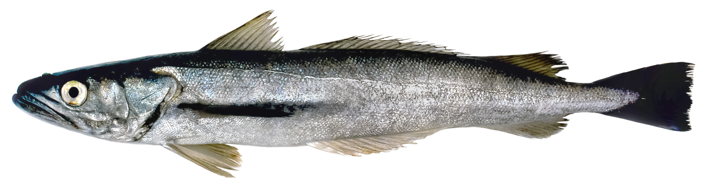
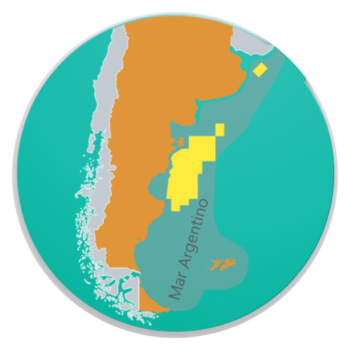

FICHA TÉCNICATECHNICAL DATA SHEET
Merluza Argentina — Argentine Hake
Merluccius hubbsi Marini, 1933
Identificación / Identification
Nombre comercialCommercial nameMerluza ArgentinaArgentine Hake
Nombre científicoScientific nameMerluccius hubbsi
FamiliaFamilyMerlucciidae
ÓrdenOrderGadiformes
Código HSHS Code0303.66 / 0304.74
Zona de pesca / Fishing area
OcéanoOceanAtlántico SudoccidentalSouthwest Atlantic
Zona FAOFAO Area41
PaísCountryArgentina — Mar ArgentinoArgentina — Argentine Sea
DistribuciónDistribution20°S–56°S / 69°W–40°W
ProfundidadDepth50–500 m
Arte de pescaFishing gearRed de arrastre de fondoBottom trawl
TemporadaFishing seasonTodo el año (sur de 41°S) · otoño abr–jun (norte)Year-round (south of 41°S) · autumn Apr–Jun (north)

Biología / Biology
Madurez sexualSexual maturity2,6 años2.6 years
Talla máx.Max size95 cm (hembra) · 60 cm (macho)95 cm (female) · 60 cm (male)
Peso máx.Max weight5,5 kg (hembra) · 1,5 kg (macho)5.5 kg (female) · 1.5 kg (male)
LongevidadLongevityHasta 11 años (hembras) / 9 (machos)Up to 11 years (females) / 9 (males)
Presentaciones / Presentations
| ProductoProduct | CalibreSize | Envase y congeladoPacking & freezing |
|---|---|---|
| EnteraWhole | 80/200 g | Block / Interfoliado 10 kg · Túnel estáticoBlock / Interleaved 10 kg · Static tunnel freezer |
| HG / HGT | 80/300 · 300/500 · 500/800 · 800/1000 · 1000/1200 · 1200/UP g | Block / Interfoliado 10 kg (2 × 10 kg) · bolsa 1–10 kg · Túnel estáticoBlock / Interleaved 10 kg (2 × 10 kg) · bag 1–10 kg · Static tunnel freezer |
| Filet con pielFillet with skin | 1/2 lbs | Interfoliado → placa de contacto · IQF → spiral freezerInterleaved → contact plate · IQF → spiral freezer (rapid freezing) |
| Filet sin pielSkinless fillet | 1–10 kg | Interfoliado → placa de contacto · IQF → spiral freezerInterleaved → contact plate · IQF → spiral freezer (rapid freezing) |
Congelado: Entero, HG y HGT por túnel estático. Filet interfoliado por placa de contacto; filet IQF por spiral freezer de congelamiento rápido.
Freezing: Whole, HG and HGT in a static tunnel freezer. Interleaved fillet by contact plate; IQF fillet by spiral freezer (rapid freezing).
Composición nutricional / Nutritional composition (per 100 g, raw)
16,3–18,2 g
ProteínaProtein
0,9–1,5 g
LípidosFat
0,24 g
Omega-3 (EPA+DHA)
74–86 kcal
EnergíaEnergy
Proteínas, lípidos y energía: INIDEP 2018 (rangos, producto fresco). Omega-3: referencia FishBase/FAO. No sustituyen un análisis de laboratorio del lote.Protein, fat and energy: INIDEP 2018 (ranges, raw product). Omega-3: FishBase/FAO reference. Not a substitute for a batch laboratory analysis.
Conservación y trazabilidad / Storage & traceability
ConservaciónStorageCongelado ≤ −18°CFrozen ≤ −18°C
SistemaSystemIQF / Block / InterfoliadoIQF / Block / Interleaved
Vida útilShelf life24 meses24 months
TrazabilidadTraceabilityPor lote / capturaBy batch / catch
frompatagoniaseafoodarg
By Sottomarina SA / Guigus SA
Fuente / Source: INIDEP 2018 · FishBase (Merluccius hubbsi) · FAO